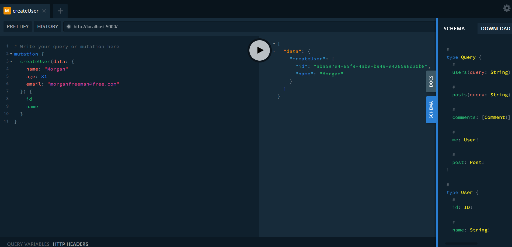
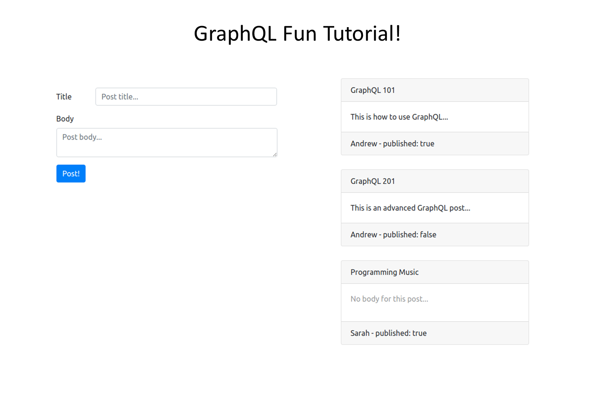

GraphQL FunTutorial!
Done Using React with Apollo
Done Using React with Apollo
For this task, I've created an application using React that serves the educational purpose of allowing people to create their own GraphQL APIs, write GraphQL clients, and establish communication between both backend and frontend.
There are two ways to run the application: to run the backend API, simply enter the command "cd GraphQL-Fun-Tutorial/backend" to navigate to the backend directory of the project, and then enter "yarn" to install all the necessary components of the API. Once everything has been installed, enter "yarn start" to start the server at localhost:5000. 
While in the server (shown in the image above), the user is able to practice creating queries, mutations, and subscriptions by entering their code in the left-hand portion of the website. Note that once they have created either, the information entered will be stored and can be displayed in the front end API of the application that uses Apollo. To be able to run and save the entered information on the left-hand side, simply click the play button located in the middle hovering between the two halves of the page. In the backend API, the user can view their current schemas and downloaded content by clicking on their tabs to the right of the screen, as well as their history and if they wish to improve the structure of their information provided through the "Prettify" button located just above the field to enter their code.
If the user wishes to see their entered information (whether they are queries, mutations, or subscriptions) take action in a deployed front-end API where the user can interact with them, simply enter the command "cd GraphQL-Fun-Tutorial/frontend" to navigate to the front end directory of the project. Once this is done, enter "yarn" again for this part to install all the necessary components for developing the front end API needed to run, and then "yarn start" afterwards to start the server at localhost:5000. Note that this is all done using the Apollo client. Once the user is in the page, the user can, for instance, create a title for their query with a descriptive note added to it, and have their queries displayed carrying those specific titles and descriptions to the right of the page.